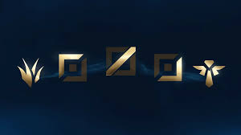

Jugabilidad
Equipos, Composiciones y Consejos
A la hora de jugar lol es muy importante tener en cuenta el como tu equipo y tus rivales estan compuestos y el tipo de campeones que pickearon (seleccionaron). Hay que tener en cuenta para las distintas etapas de la partida, ya que en alguna parte de la partida los campeones de tu equipo y del equipo rival tienen mejor escalado (Cuando hablamos de escalado nos referimos a la forma en la que un campeon progresa) y debido a eso puede ser que en el "early/mid/late game" necesites de distinto tipo de campeon.
Roles del juego
En League of Legends, cada jugador controla un campeón con habilidades únicas y se agrupan en diferentes roles dentro de un equipo. Los roles principales son:
1. Top (Superior): El campeón que juega en la línea superior del mapa. Suelen ser campeones tanques o con gran capacidad para resistir daño, pero también pueden ser luchadores o campeones con daño sostenido. Su función principal es la de mantener presión en la línea superior y ayudar al equipo en peleas y objetivos importantes.
2. Jungla: El jungla es responsable de recorrer la jungla entre las líneas y ayudar a los demás compañeros. Su tarea principal es asegurar objetivos neutrales como los dragones, el Heraldo de la Grieta y los Baron Nashor, además de gankpear (atacar) las líneas para ayudar a conseguir ventajas para su equipo. Suelen ser campeones con habilidades de control de masas o movilidad.
3. Mid (Central): El campeón que juega en la línea central del mapa. Suelen ser campeones con gran capacidad para infligir daño a distancia o con habilidades de burst (daño repentino). Su función principal es la de hacer daño en peleas de equipo y controlar la zona central del mapa.
4. ADC (Carry de Ataque a Distancia): También conocido como tirador, es el campeón que se sitúa en la línea inferior del mapa junto a un soporte. Son campeones con gran capacidad para infligir daño físico a distancia y su objetivo principal es llevar al equipo a la victoria en las fases tardías del juego, cuando tienen suficiente oro y objetos para causar un gran impacto en las peleas de equipo.
5. Soporte: Acompaña al ADC en la línea inferior. Suelen ser campeones con habilidades de utilidad, como curaciones, escudos, control de masas o visiones. Su función principal es proteger al ADC, facilitarle el farmeo y ayudar al equipo con visiones y control del mapa.
Estos son los roles principales en League of Legends, y cada uno tiene su función específica dentro del equipo. La coordinación y el trabajo en equipo entre los jugadores de diferentes roles son fundamentales para lograr la victoria en el juego.
Jugadores Profesionales
Yo soy bastante versatil y suelo jugar en distintas posiciones mis favoritos "players"(jugadores en ingles) son: "Thebausffs" (toplaner, que juega principalmente sion de diferentes maneras y ademas creador del "inting sion") "Josedeodo"(Jungler,que ha jugado y triunfado en cada una de las regiones en las que estuvo llegnado a challenger que es rango mas alto de todo el juego e incluso participo en grandes eventos internacionales junto a otros jugadores de su equipo )
Rangos De Clasificacion de League Of Legendes
En League of Legends, los rangos de clasificación representan diferentes niveles de habilidad y desafío. Desde Hierro hasta Challenger, los jugadores progresan a través de diferentes etapas, mejorando su técnica y estrategia. Cada rango requiere habilidades específicas y ofrece oportunidades para crecer y enfrentar desafíos más difíciles.
Aquí tienes una lista de los rangos de clasificación en League of Legends, de menor a mayor:
- Hierro 🔨
- Bronce 🏅
- Plata 🥈
- Oro 🥇
- Platino 🏅
- Esmeralda 💠
- Diamante 💎
- Maestro 🏆
- Gran Maestro 🎓
- Challenger ⭐
Cada rango representa un nivel de habilidad y ofrece desafíos únicos para los jugadores que buscan mejorar y ascender en la clasificación competitiva del juego.
Momentos del Game
Early-game (Inicio de la partida) ⚔️
- Fase de Desarrollo: Enfócate en ganar oro y experiencia.
- Control de Visión: Coloca y destruye wards para obtener información sobre los movimientos del equipo enemigo.
- Objetivos Tempranos: Participa en la toma de objetivos como torres y dragones elementales.
Mid-game (Mitad de la partida) 🛡️
- Rotaciones: Ayuda a tu equipo en otras líneas y asegura objetivos como torres exteriores y dragones.
- Lucha por el Control de Mapa: Mantén el control de las zonas de visión clave y busca oportunidades para emboscar al equipo enemigo.
- Objetivos Globales: Prioriza la toma de dragones elementales y el control del Barón Nashor.
Late-game (Final de la partida) 🏰
- Trabajo en Equipo: Coordina con tu equipo para realizar emboscadas y mantener la presión en las líneas.
- Posicionamiento: Mantén una buena posición en las peleas de equipo y protege a los carries de tu equipo.
- Decisiones Cruciales: Toma decisiones estratégicas clave sobre qué objetivos priorizar y cuándo presionar para cerrar la partida.